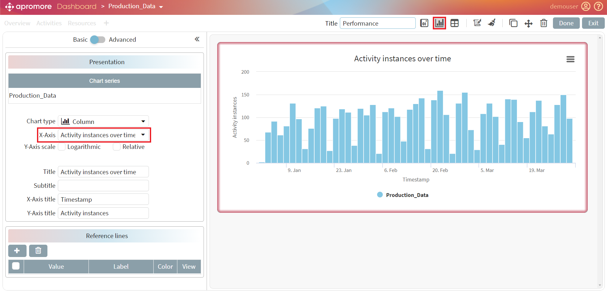
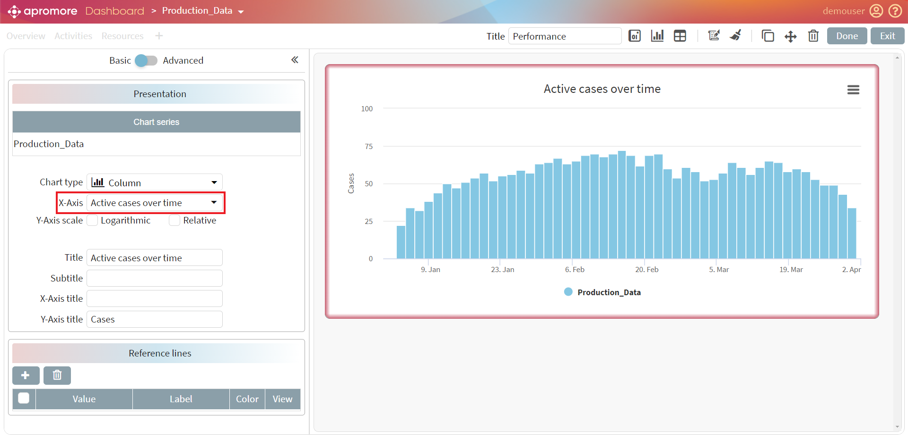
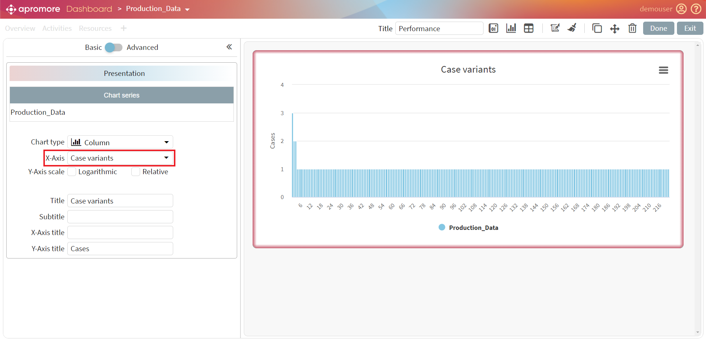
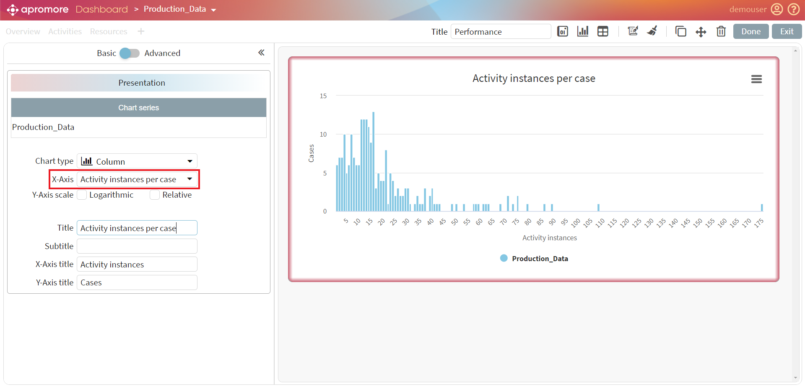
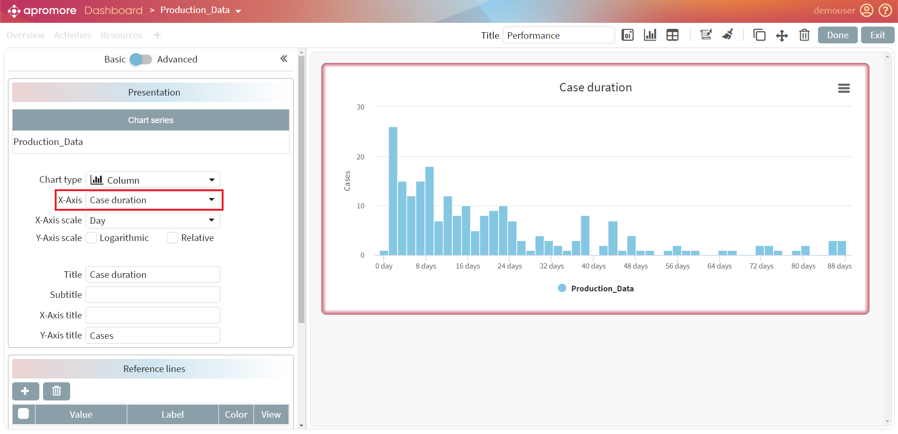
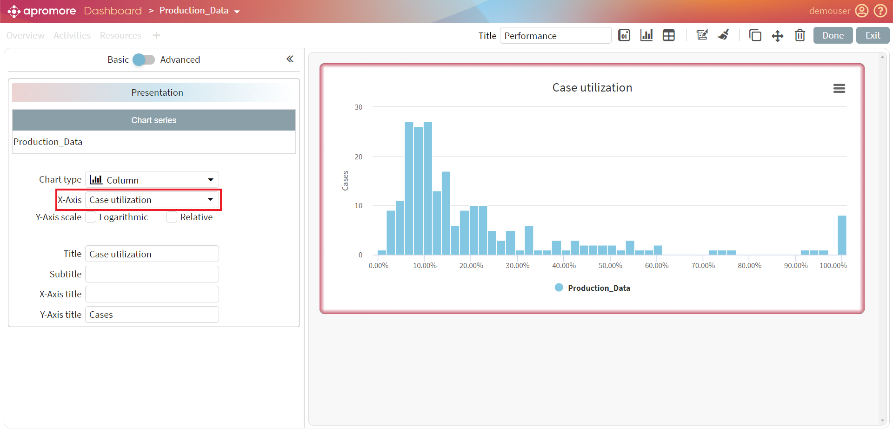
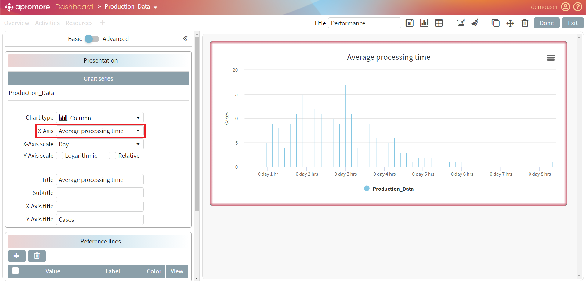
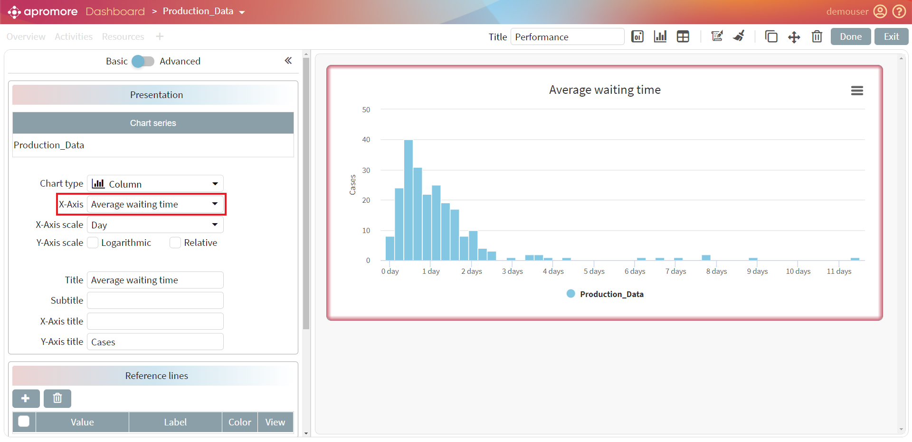
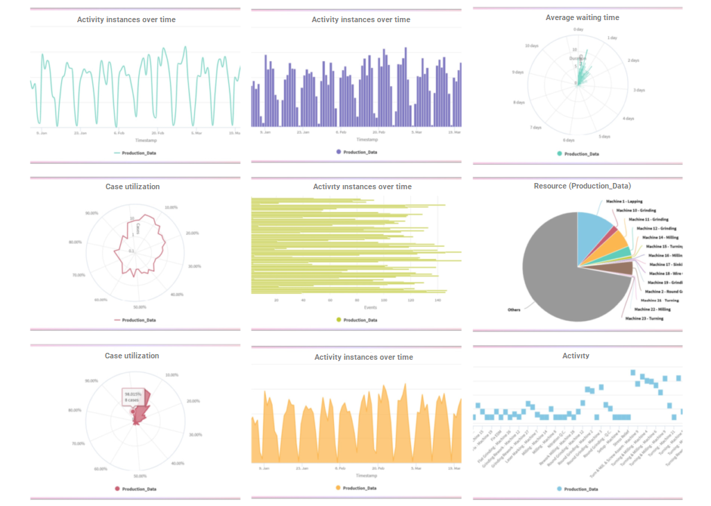

Add charts to dashboard
Apromore’s Performance Dashboard allows users to analyze a business process from a performance measurement perspective visually. The Performance Dashboard displays a variety of aggregate statistics and charts. The Performance Dashboard plugin allows us to analyze one process in isolation or to compare multiple process variants. For example, we can use the Performance Dashboard plugin to compare how a given process is executed across multiple regions or compare the variant of a process consisting of slow cases versus faster cases.
To open the dashboard plugin, select at least one event log and click on Analyze - > View performance dashboard. To compare multiple process variants, we need to select multiple event logs and then open the Performance Dashboard plugin.

Activity instances over time chart
We can add different charts by clicking on the Add a new chart button.
The Activity instances over time chart displays how many activity instances occur during the time frame of the entire event log. The Y-axis denotes the ‘Timestamp’ of the entire log. The X-axis denotes the number of activity instances. This chart can help us to identify various patterns, such as the periodicity of the process. We can observe, for example, that in certain months of the year or certain days of the week, there is more activity than in others.

Active cases over time chart
The Active cases over time chart displays the work-in-progress over the entire timeframe of the log. To understand and view the work-in-progress over a period of time, click the Active cases over time tab. Alternatively, we can use Case length filter.

Case variants chart
A case variant is a sequence of activities followed by one or more cases, i.e., a distinct pathway. For example, if A, B, C, and D represent activities, then ABCD, ACBD, and ABC represent three case variants. Typically, there are multiple cases in a log that follow the same case variant. For example, it may be that 10 cases follow the case variant ABCD, while 5 cases follow the case variant ACBD. The Case variants chart displays the number of cases that follow each variant. The variants are sorted from most frequent to least frequent.

Activity instances per case chart
The Activity instances per case chart displays the number of activity instances in each case. The horizontal axis depicts the number of activity instances, while the vertical axis depicts the number of cases.

Case duration chart
To visualize the histogram of the case duration of the process, click on the Case Duration tab. Based on the screenshot below, we can identify many cases between the start time and approximately 23 days. However, some cases took more than a month.

Case Utilization
The Case utilization is the ratio between the processing time of a case and the case duration. The processing time of a case is the amount of time during which someone was actively working on an activity in the case (i.e., the case duration excluding waiting times). The “Case utilization” chart displays the histogram of case utilizations in the log. Each bar in the chart shows the number of cases (Y-axis) with a given case utilization (X-axis). If we see one bar only, there may be two reasons: either all cases have the same value of case utilization, or the other bars are tiny. If that is the case, press the “Log scale” button on the chart’s top left corner to make the other bars visible.

Processing time chart
The processing time of a case is the amount of time during which someone was actively working on an activity in the case (i.e., the case duration excluding idle times). We can choose between the total, maximum, and average processing time from the dropdown menu. The Processing time chart displays the histogram of processing times of the cases in the log. Each bar in the chart shows the number of cases (Y-axis) with a given processing time (X-axis). If we see one bar only, there may be two reasons: either all cases have the same value of processing time, or the other bars are tiny. If that is the case, press the Log scale button on the chart’s top left corner to make the other bars visible.

Waiting time chart
The waiting time of a case is the amount of time during which nobody was actively working on an activity in the case. We can choose between the total, maximum, and average waiting time from the dropdown menu. The Waiting Time chart displays the histogram of waiting times of the cases in the log. Each bar in the chart shows the number of cases (Y-axis) with a given waiting time (X-axis). If we see one bar only, there may be two reasons: either all cases have the same value of waiting time, or the other bars are tiny. If that is the case, press the Log scale button on the chart’s top left corner to make the other bars visible.

We can create different types of charts using the custom dashboard. Charts like column and pie charts work best with categorical values, while line charts work best with numerical data.
